Roblox Studio & Luau
The game, the server-side mission logic and the cutscenes.
08 / HACKATHON · NASA SPACE APPS CHALLENGE 2026
Junior Astronaut Mission Trainer
A free Roblox game where kids aged 7–12 keep a lunar south-pole outpost alive for seven nights. Every choice trades one real resource for another, and the solar storms are driven by real NASA DONKI flare data.
TEAM CTRL-ALT-DEL Andrea, Eurisonn, Karthik, Ming Kai and Samuel
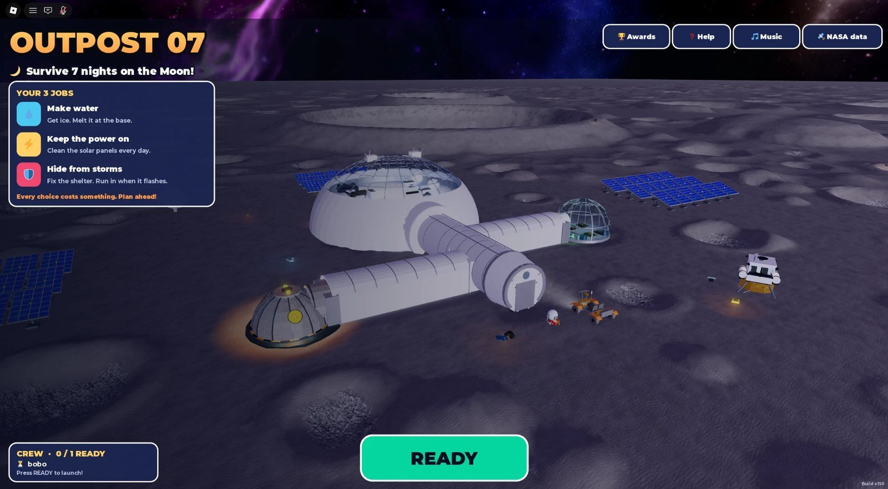
View full image ↗Players are the crew of a small outpost at the lunar south pole, where NASA's Artemis program plans to land, and must keep it alive for seven nights until a rescue ship arrives.
Each day gives the crew a job that teaches one constraint: clean the solar panels, start the greenhouse, seal an oxygen leak, tune the storm shield, stock up on water. Each night tests whether they prepared. A short cinematic shows launch, lunar orbit, landing, and Orion's return and splashdown at the end.
The problem: kids rarely get to feel why astronauts plan so carefully. The impact: Roblox is already where millions of children play, on phones, tablets and computers. Outpost 07 meets them there, so a ten-year-old leaves knowing why water, power and shielding compete on the Moon, and that the space weather they survived was real.
Gather crater ice and collect scrap out on the surface while suit air drains, then melt ice into water and grow food in the greenhouse with Captain Nova.
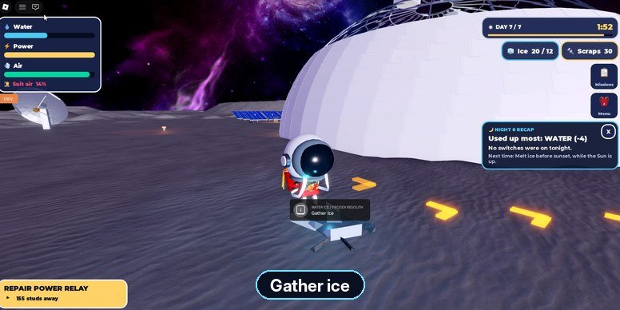
View full image ↗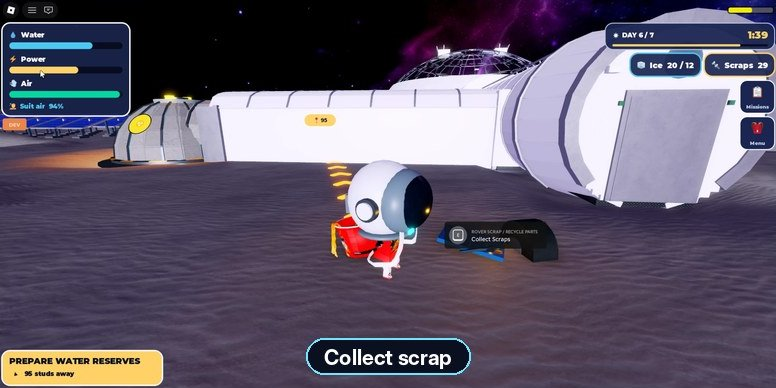
View full image ↗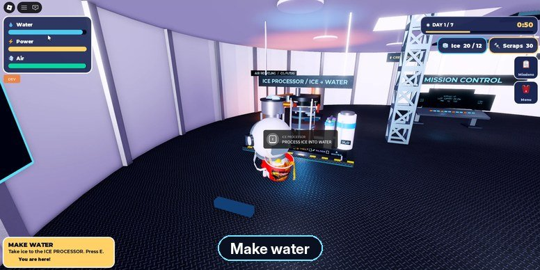
View full image ↗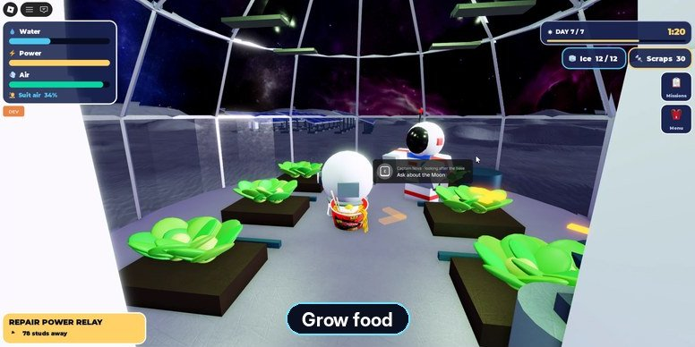
View full image ↗Every decision area in the challenge brief is a working system in the game, and each one costs something. Skipped jobs come back as night alarms.
| System | How Outpost 07 does it | The trade-off |
|---|---|---|
| Life support | Oxygen and air-recycling meters; seal an oxygen leak on day 4 | An unsealed leak drains oxygen all night |
| Radiation shielding | Rebuild the shelter with scrap; calibrate the storm shield on day 5 | Scrap spent on the shelter cannot buy upgrades |
| Power budgeting | Clean dusty solar panels, charge the backup battery, switch lights and machines | Ice melting and the greenhouse both draw power |
| Food production | Switch the greenhouse on and mix nutrients | The greenhouse drinks water and power |
| Communication delay | Earth's messages arrive 1.3 s late; calling Earth takes a 2.6 s round trip | You act before help arrives |
| Emergency reserve | Boosts one system by draining another | Refused if paying would leave a system near empty |
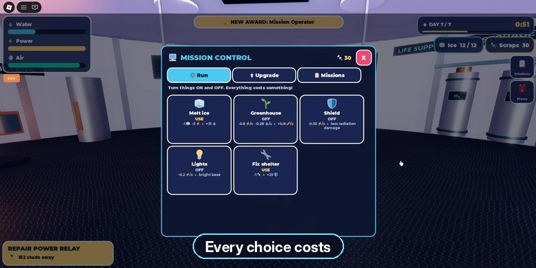
View full image ↗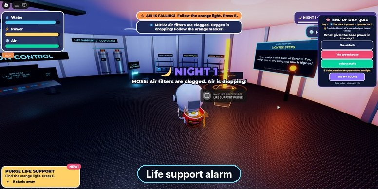
View full image ↗Each game fetches the last 30 days of solar flares from NASA's DONKI space-weather database through Roblox HttpService. The flare class sets how hard the storms on nights 5 and 7 hit, and players see the real flare class and date in the game.
If the live request fails, the game falls back to an archive of 10 real past flares (2011–2024), each checked against NASA and NOAA records and clearly labelled ARCHIVED, so static data is never shown as live.
8 s warning · 1.5× shield damage
12 s warning
16 s warning · 0.5× shield damage
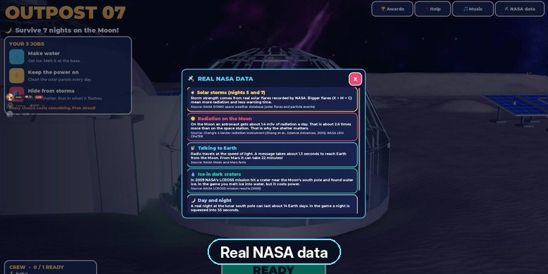
View full image ↗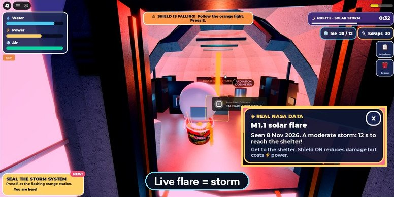
View full image ↗Captain Nova, an astronaut guide, explains what is happening in plain words and answers "Ask about the Moon" with NASA facts. At sunset, a three-question quiz uses the facts each player heard, graded on the server. Up to a full crew can play together: restarts are a crew vote, and radiation knocks out one player rather than ending the game for everyone.
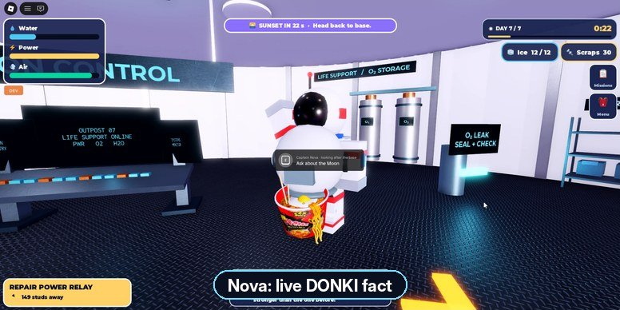
View full image ↗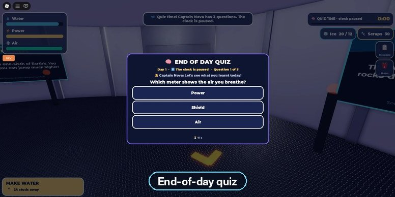
View full image ↗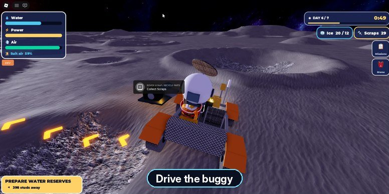
View full image ↗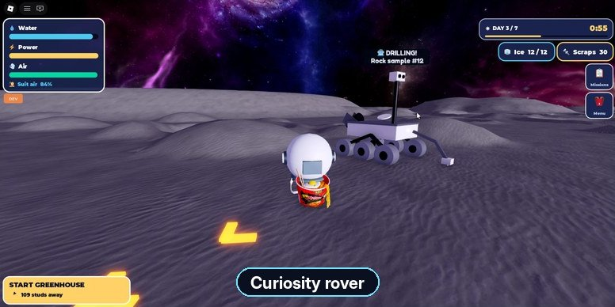
View full image ↗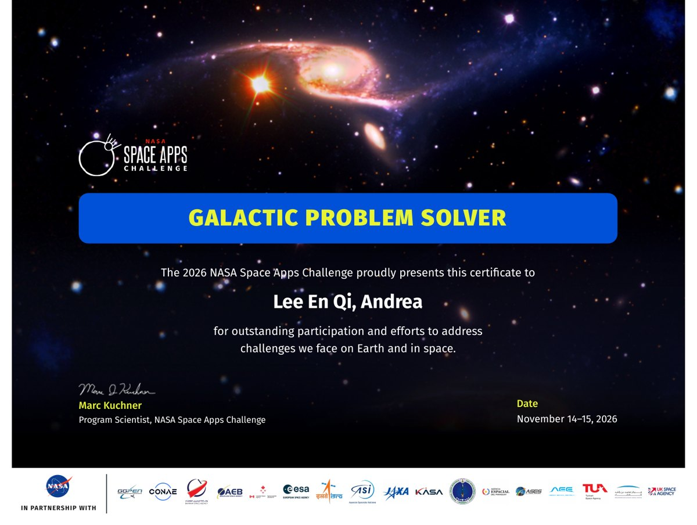
Awarded to each member of team Ctrl-Alt-Del by the 2026 NASA Space Apps Challenge for outstanding participation and efforts to address challenges we face on Earth and in space, 14–15 November 2026.
The game, the server-side mission logic and the cutscenes.
Live NASA DONKI requests, with a checked archive as fallback.
Lander, rover and buggy models in Blender; Python for build tools and the trailer soundtrack.
Known limits: the game tracks five meters (power, oxygen, water, food, shield), where the brief suggests two or three for young players; NASA OSDR is not used yet; players need a free Roblox account. Outpost 07 is a NASA Space Apps Challenge 2026 project and is not endorsed by NASA.
A 30-second look at Outpost 07, from landing at the outpost to surviving the lunar night.